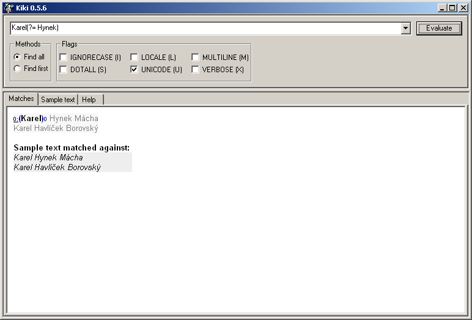
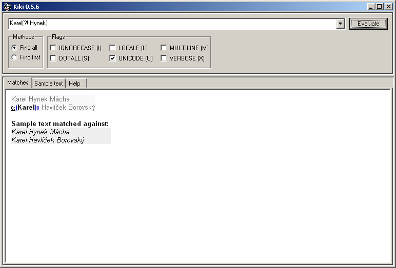
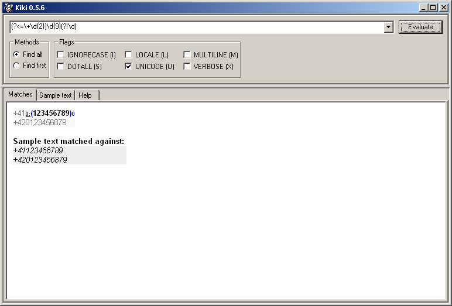
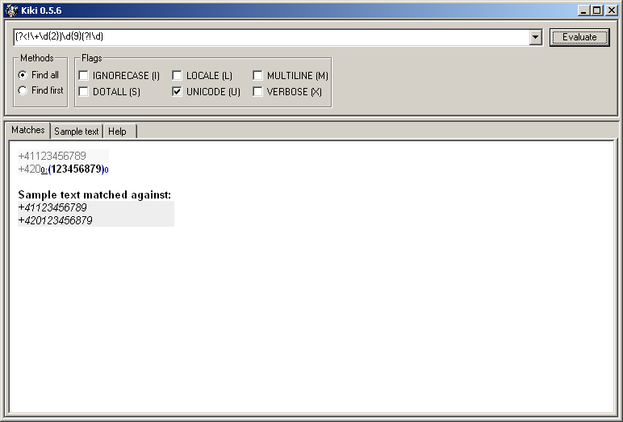
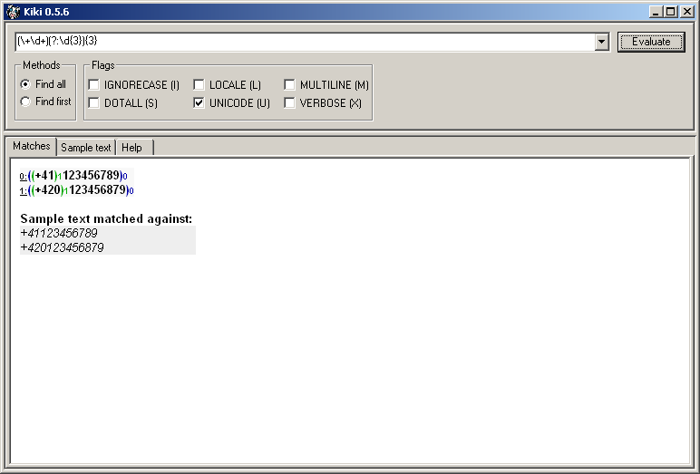
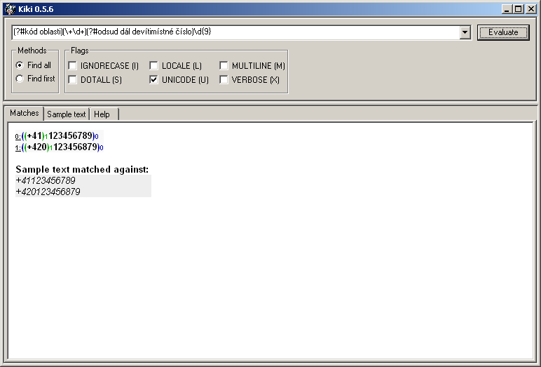
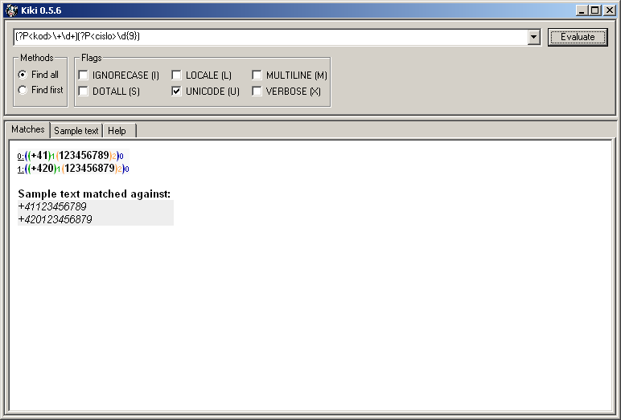
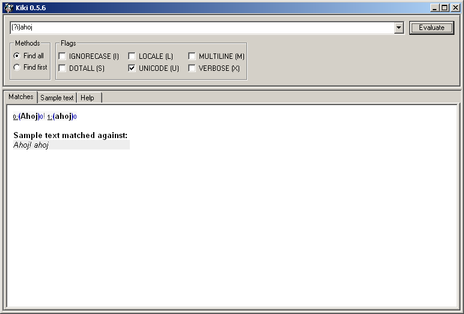

Rozšíření
by Jiří Znamenáček
Úvod
Jak už jsme viděli ve formálním úvodu, regulární výrazy v původním smyslu slova sice dokázaly mnohé, ale jejich zápis nebyl zrovna krátký a jednoduchý. Záhy proto začala vznikat nejrůznější rozšíření regulárních výrazů, která jejich zápis, resp. možnosti, podstatně zjednodušovala, resp. zvětšovala.
S mnoha rozšířeními regulárních výrazů za hranice původních jsme se již seznámili (namátkou skupiny nebo speciální řídicí znaky), ale jednu velkou množinu jsme si nechali až do této samostatné kapitoly. Jedná se o rozšíření typu (?…).
Zavedení
S rozšířeními typu (?…) přišli vývojáři jazyka Perl. Důvodem výběru právě tohoto označení bylo, že dvojce metaznaků (? hned po sobě totiž v rámci regexpů nedává smysl.
Obecně tedy všechny řetězce typu (?…) jsou vyhodnoceny jako rozšíření regexpu a záleží pouze na obsahu části … (resp. na nejvýše několika prvních znacích z této části), o jaké konkrétní rozšíření se jedná.
Některá z těchto rozšíření (převážně původní perlovská) jsou sdílena mnoha implementacemi regexpů, jiná používají zvláštní rozpoznávací syntaxi a jsou určena pouze pro konkrétní implementaci.
(?P…). V dané chvíli jsou právě dvě a slouží pro použití v rámci pojmenovaných skupin.
A ač syntaxe pro rozšíření používá závorky, skoro nikdy rozšíření nevyrábí skupinu.
(?P<jmeno>…) slouží k vytvoření pojmenované skupiny.
(?=…) & (?!…)
Prvním a nejklasičtějším případem rozšíření regexpů je takzvané vyhlížení (čmuchání dopředu, lookahead assertion). Stručně řečeno zajišťuje, že regexp v daném místě bude splněn pouze tehdy, pokud řetězec od tohoto místa dále bude (nebo naopak nebude) vyhovovat jistému jinému regexpu.
Vyhlížení se vyskytuje ve dvou variantách – potvrzovací (vedlejší regexp musí být splněn) a zamítací (vedlejší regexp nesmí být splněn):
Obecný kód pro pozitivní vyhlížení (positive lookahead assertion) jest …H(?=…V). Hlavní regexp …H bude zachycen jen a pouze tehdy, pokud řetězec těsně za ním bude splňovat vedlejší regexp …V:

Karel nalezne zásah pouze na první řádce, protože pouze na ní je slovo Karel následováno mezerou a slovem Hynek, jak předepisuje regexp (?= Hynek) (a ještě jednou výslovně upozorňuji na to, že mezera je součástí daného regexpu a nikoli rozšíření :-).
Negativní vyhlížení (negative lookahead assertion) …H(?!…V) je doplňkem k vyhlížení pozitivnímu – hlavní regexp …H bude zachycen jen a pouze tehdy, pokud řetězec těsně za ním nebude splňovat vedlejší regexp …V:

(?! Hynek) (a pro mezeru platí stejná poznámka jako výše).
(?<=…) & (?<!…)
Nepřekvapivě k vyhlížení směrem dopředu existuje i nahlížení směrem dozadu (čmuchání dozadu, lookbehind assertion) s přesně opačným významem – regexp v daném místě bude splněn pouze tehdy, pokud řetězec těsně před tímto místem bude (nebo naopak nebude) vyhovovat jistému jinému regexpu.
Stejně jako vyhlížení i nahlížení se vyskytuje ve variantě potvrzovací a zamítací:
Obecný kód pro pozitivní nahlížení (positive lookbehind assertion) jest (?<=…V)…H. Hlavní regexp …H bude zachycen jen a pouze tehdy, pokud řetězec těsně před ním bude splňovat vedlejší regexp …V:

Obecný kód pro negativní nahlížení (negative lookbehind assertion) jest (?<!…V)…H. Hlavní regexp …H bude zachycen jen a pouze tehdy, pokud řetězec těsně před ním nebude splňovat vedlejší regexp …V:

(?:…)
Kód (?:…) označuje skupinu, kterou jako skupinu bereme (takže na ni třeba můžeme aplikovat opakovací operátory a podobně), ale nepotřebujeme si ji zapamatovat.
Toto rozšíření jsme probírali již u skupin. Ukažme si tentokrát jiný příklad – nalezení kódu země v telefonním čísle:

\d{9}, ale to bych pak musel vymýšlet jiný příklad *_* :-)
(?#…)
Velmi osobitým rozšířením je komentář (?#…) – text na místě … se jednoduše z hlediska regexpu vůbec neuvažuje. Šikovné u dlouhých a složitých regexpů, které nemůžeme napsat v uvolněné syntaxi.

(?P<jméno>…) & (?P=jméno)
Rozšířením specifickým pro Python jsou pojmenované skupiny. Každá skupina (s výjimkou nepamatovaných) má přiřazeno pořadové číslo, pod kterým je možné se na ni dále v regexpu odvolat. To je sice šikovné, ale má to své mouchy:
- při větším počtu skupin se stává dopočítání pořadí složitějším
- při jakékoliv změně regexpu, která přidá či ubere nějakou skupinu, dojde k přečíslování skupin (a tím pádem k rozbití většiny odkazů na ně)
Stručně řečeno jsou tedy pojmenované skupiny způsob, jak ve dlouhém regexpu nemuset počítat (a při každé úpravě hlídat a přepočítávat) závorky, abyste se zpětným odkazem odvolali na správnou skupinu. Nehledě na to, že při další práci s kódem je mnohem přehlednější odvolávat se na vhodné názvy než na nic neříkající čísla.
PS: Z implementačních důvodů musí být jména skupin v podstatě ASCII, ač dokumentace tvrdí „validní pythonovské identifikátory“.
S pojmenovanými skupinami jsme se už také setkali dříve. Vyrobme si však na tomto místě další variantu předchozího příkladu:

(?(id)ano|ne)
Tahle hodně specifická záležitost se odvolává na existenci předchozí skupiny id (ať už pod jejím pořadovým číslem nebo jménem) – pokud uvedená skupina v regexpu existuje, aplikuje se podregexp v části ano, jinak se pokusí dohledat podregexp z části ne.
(?(id)…) se jako celek nezapamatuje, takže chceme-li z ní dostat obsaženou informaci, musíme ji ještě navíc uzávorkovat.
Zkusme radši rovnou vymyslet názornější příklady:
Příklad 1: V seznamu adres rozpoznejme adresy protokolu FTP a jen u nich si zapamatujme jméno stroje a cestu ke zdroji na něm:
(?P<ftp>ftp://) bude zaznamenána (pod jménem ftp) pouze tehdy, bude-li adresa odpovídat protokolu FTP. A pouze tehdy bude díky (?(ftp)…) vyhodnocena i druhá část regexpu (\w+\.\w{2,3})(/.*)?, která jako první podskupinu odchytí adresu stroje a jako druhou cestu ke zdroji na něm.
Příklad 2 (podle dokumentace): Najděme správně uvozené imejlové adresy:
(<)?), bude se na konci testovat přítomnost odpovídající pravé závorky > (ano-část v kódu (?(1)>|$)). Nezačíná-li řetězec na <, bude na konci testován na prostý konec řetězce $ (ne-část v kódu (?(1)>|$)).
(?aiLmsux)
Globální chování regexpů běžně řídíme zadáním příslušných příznaků při kompilaci regexpu. Je však možné tyto příznaky zadat pomocí speciální notace (?aiLmsux) přímo do zápisu regexpu. Odpovídající mapování zkratek je následující:
| zkratka | plná forma | význam |
|---|---|---|
a |
ASCII | uvažuj pouze ASCII-vyhledávání |
i |
IGNORECASE | ignoruj velikost písmen |
L |
LOCALE | uvažuj aktuální nastavení locale |
m |
MULTILINE | neomezuj se na jeden řádek |
s |
DOTALL | tečka odchytí skutečně všechno |
x |
VERBOSE | použití uvolněné notace |
x je pochopitelně trochu problematické – mění totiž, jakým způsobem se bude celý regexp vyhodnocovat. Proto pokud ho chcete použít, udělejte to hned na začátku.
u aka UNICODE je v Python'u 3.x přebytečný, protože v něm všechny řetězce jsou automaticky unicodové. Byl zachován kvůli zpětné kompatibilitě.
Jednoduchý příklad:

ahoj našel jak ahoj, tak i Ahoj, protože jsme pomocí (?i) zapnuli přepínač IGNORECASE, tedy nerozlišování mezi malými a velkými písmeny.